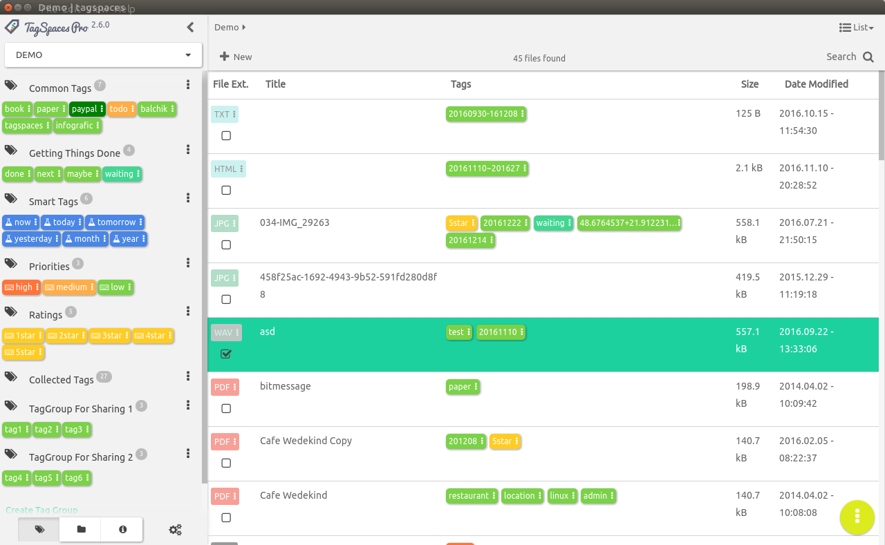

User Interface
Homescreen

Tags and tag operations based on filenames
TagSpaces supports tagging of files in a multi platform way. It uses basically the name of the file to save this kind of meta information. As an example if you want to add the tags vacation and alps to a image named IMG-2653.jpg, the application will simply rename it to IMG-2653[vacation alps].jpg. File renaming is of course very controversial decision (see our users [discussion]), with its own limitations (on some operating systems the file path length is limited to ca. 256 characters), but it allows a portable way for adding tags on every platform (even cloud based).
File & Folder operations
The app can be used as a simple file manager. It support currently the following operation of files and folders.
- File renaming
- File moving
- File deleting
- File opening with the current default application for your operating system
- Opening parent folder of a file with default file manager
- Folder renaming
- Folder deleting (only empty folder can be deleted)
- Folder opening with the default file manager of the operating system
File previewing
The application supports previewing of many file types directly. It has a basic build in Image, PDF, EPUB, ZIP, URL, Audio and Video and Text viewers. TagSpaces is designed with extensability in mind so any other kind of file viewers can developed and integrated easily.
Note taking
TagSpaces has the ability to create and edit new files in plain text, HTML and markdown. With these functions the application can be used as valuable alternative to note taking and personal wiki systems such as Evernote, Onenote, TidyWiki and others.
Printing files
Many of the supported file types can be directly printed from the application.
Source code browser and editor
The text editor supports source code highlighting for many common programming languages. This in combination with the build in JSON editor makes the application a good source code navigator with basic editing capabilities. The intention here is not to makes TagSpaces your next IDE, but rather to give your quick overview of soure code repositories.
Drag & Drop of tags and files
The user interface of the application is design to be usable on touch screens, but for the pure desktop, we support many drag & drop operation such as:
- Adding tags from the tag groups to files in the list & grid perspectives and to the file viewer
- Moving tags from one tag group to another
- Dragging tags from one file to another in the list perspective
Webscraper for Chrome and Firefox
We offer experimental browser extension for capturing web content. These so called webscraper are available for Chrome and Firefox. They both have the following main functionalities:
- Saving the current webpage as single files including the embedded images and styling information. On Chrome we use the MHTML format and Firefox we use pure HTML.
- Saving the a selected part of the current webpages as HTML file.
- Saving a screenshot of the visible area of the current webpage as a PNG files.
- Adding tags in the file names to the sraped files before saving
Multi platform
We offer version of TagSpaces for various 32- and 64-bit desktop platforms such as Windows, Linux and Mac OS X. For details please visit our download page.
Generating live thumbnails for photos
In the Grid and ImageSwiper perspectives TagSpaces generates thumbnails for JPG and PNG files on fly. These small image previews are not persisted on your system, so every time you open a folder they will be regenerated. TagSpaces generates thumbnails only for image files which are currently visibile in the application.
Portable mode
The Windows and Linux versions of TagSpaces can be started in the so called portable mode, allowing the use from an USB-stick or other portable devices. In this mode all the configuration information such as tags, tag groups and connection to locations is stored in the folder from where the application is started and not in the home user folder on current operating systems. Find out more on portable mode section in the documentation.